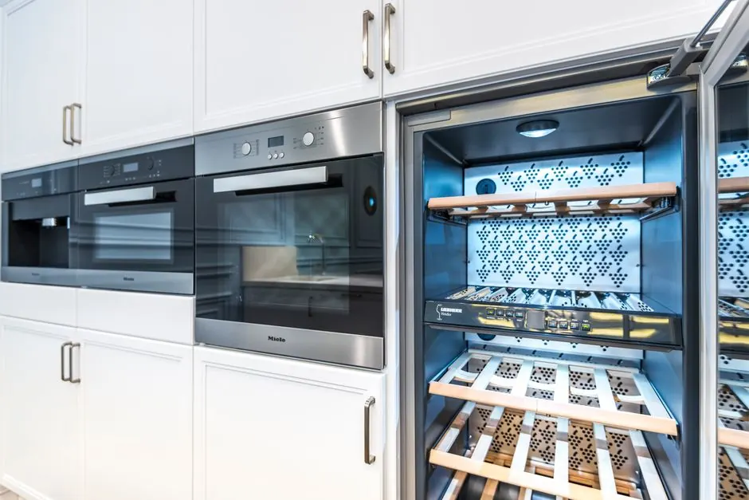

Your local Vero Beach South Appliance team
Appliance in Vero Beach South
Appliance in Vero Beach South is crucial for maintaining the efficiency of your home. Whether you're dealing with a dryer not heating or need assistance with electric dryer repair, our team is here to help you. We specialize in dryer repair services in Vero Beach South, ensuring your appliances run smoothly.
24/7 dispatchVero Beach South ZIP codesResidential & commercial
Local system knowledge
Why Choose Appliance in Vero Beach South?
Appliance in Vero Beach South is a service that ensures your household appliances operate efficiently. Our experienced technicians understand the unique needs of the local community, including the humid coastal climate that can affect appliance performance. We provide services across neighborhoods like South Vero Beach and Vero Beach Estates, making us your go-to for reliable appliance repairs. With our expertise in handling common issues like dryers not heating and electric dryer repairs, we are committed to serving the residents of Vero Beach South.
Explore Vero Beach South services
Dryer Repair Vero BeachVero Beach South has a vibrant community that relies heavily on appliances for daily living. The high humidity can lead to more frequent appliance issues, especially with dryers. Our team has deep ties to the area and understands the specific challenges homeowners face, ensuring we provide timely and effective solutions.
Services available in Vero Beach South
Appliance Services Available in Vero Beach South
In Vero Beach South, the demand for reliable appliance services is high, especially during peak seasons. Our team offers a variety of services, including 24/7 appliance service Vero Beach South, ensuring we are always available when you need us most. Whether you need a dryer repair or help with a dryer not heating, we have you covered.
01
dryer repair
Our dryer repair services in Vero Beach South address common issues such as overheating or failure to start. We work on various brands and models, ensuring your dryer operates efficiently, especially in humid conditions.
02dryer not heating
Experiencing a dryer not heating in Vero Beach South? Our technicians diagnose and fix heating element issues, ensuring your laundry routine stays on track.
03electric dryer repair
Electric dryer repair in Vero Beach South is essential for maintaining your appliance's performance. We handle everything from faulty thermostats to wiring issues.
04dryer deep cleaning
Our dryer deep cleaning service in Vero Beach South helps prevent fires and improve efficiency. We thoroughly clean dryer vents and ducts to ensure safe operation.
05repair dryer kenmore
We specialize in Kenmore dryer repairs in Vero Beach South, addressing common issues like drum not turning and unusual noises, ensuring your appliance is back in top shape.
More than a service list
How We Execute Appliance Services in Vero Beach South
Our appliance services in Vero Beach South are tailored to meet the specific needs of the area. The coastal climate can lead to unique challenges, such as increased humidity affecting dryer performance. We ensure that ou
High humidity affecting appliance performance
This can lead to increased breakdowns and maintenance needs for appliances, particularly dryers. How we help: We use specialized techniques and tools to mitigate the effects of humidity, ensuring appliances function optimally.
Frequent power surges
Power surges can damage appliance components, leading to costly repairs. How we help: We recommend surge protectors and perform thorough inspections to prevent damage.
Older building stock
Older homes may have outdated wiring or appliances that require more frequent repairs. How we help: Our technicians are trained to work with older systems, ensuring safe and effective repairs.
Early warning signs
Signs You Need Appliance Services in Vero Beach South
A small visible symptom can point to a bigger pattern.
Dryer not heating properly
Dryer not heating properly
Unusual noises from your dryer
Unusual noises from your dryer
Drum not turning
Drum not turning
Dryer stops mid
Dryer stops mid-cycle
Clear starting points
Pricing for Appliance Services in Vero Beach South
In Vero Beach South, appliance service pricing typically ranges from $150 to $400 depending on the complexity of the repair. Factors such as the type of appliance and the specific issue can affect the final cost. We strive to offer affordable appliance repair in Vero Beach South, ensuring transparency in our pricing.
Type of appliance
Different appliances have varying repair costs. For example, dryer repairs may be less expensive than refrigerator repairs due to parts and labor involved.
Complexity of the issue
More complex issues, such as electrical problems, may raise the cost due to the need for specialized tools and expertise.
Parts replacement
If parts need to be replaced, this will add to the total cost. We always inform customers beforehand about any necessary parts.
We know the route
Landmarks and Points of Interest in Vero Beach South
Navigating Vero Beach South is made easier by its well-known landmarks. Our team uses these locations for orientation and planning our service routes, ensuring timely arrivals for appliance repairs.
South Beach Park
This popular park is a key reference point for our technicians when servicing nearby homes.
Vero Beach South Community Center
The community center is a hub for local events, making it a familiar landmark for our service routes.
Vero Beach Airport
Proximity to the airport helps us plan our routes efficiently, ensuring timely service.
Vero Beach Marina
The marina is a bustling area where many residents require appliance services due to frequent boating activities.
Vero Beach South service coverage
Is your ZIP on the route?
These are our most frequently served ZIP codes. Nearby areas may also qualify — call if you do not see yours.
32968329663296232960
Popular neighborhoods: South Vero Beach · Vero Beach Estates · Vero Beach Highlands · Vero Beach South Beach
Check my address →
1234
Primary Vero Beach South response zoneSame-day response depends on current call volume, technician availability, and required equipment.
Reviews from Vero Beach South customers
Customer Reviews from Vero Beach South
★★★★★
“I had an amazing experience with their service! My dryer wasn't heating, and they fixed it the same day. Highly recommend!”
★★★★★
“Prompt and professional service. They diagnosed my electric dryer issue quickly and had it repaired in no time.”
★★★★★
“Excellent service! They were able to fix my gas dryer that wouldn't start. Very satisfied with the results!”

Vero Beach South Appliance FAQ
FAQs About Appliance in Vero Beach South
A real dispatcher is available if your question is not answered here.
Call 772 123 4567What are the best Appliance services in Vero Beach South?
The best appliance services in Vero Beach South include dryer repair, dryer not heating, and electric dryer repair, all tailored to local needs.
How much does Appliance repair cost in Vero Beach South?
Typical appliance repair costs in Vero Beach South range from $150 to $400, depending on the issue and type of appliance.
Where can I find Appliance repair near me in Vero Beach South?
You can find reliable appliance repair services in Vero Beach South by searching online or asking for local recommendations.
What should I do if my dryer won't start?
If your dryer won't start, check the power supply and door latch. If issues persist, contact a professional for diagnosis and repair.
How can I prevent my dryer from overheating?
Regular maintenance, including cleaning the lint filter and dryer vent, can help prevent overheating and ensure safe operation.
Vero Beach South dispatch is ready
Need Dryer Repair Vero Beach FL? Contact Us Today!
We offer reliable and prompt dryer repair services in Vero Beach. Trust our experienced team to get your appliance running smoothly again.
Talk with the local team
Request Vero Beach South service
Reach out to us for all your dryer repair needs in Vero Beach. We are available from 8 AM to 6 PM and respond promptly to inquiries.